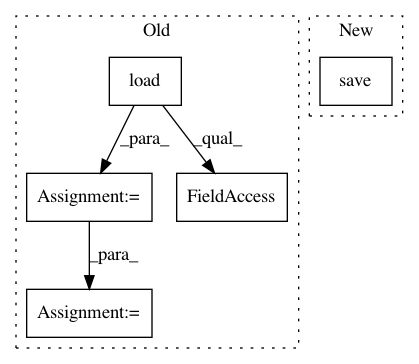

891e580bc8e66d0d81c2334c507cd1b10f93cbc2,pynets/registration/register.py,,direct_streamline_norm,#Any#Any#Any#Any#Any#Any#Any#Any#Any#Any#Any#Any#Any#Any#Any#Any#Any#Any#Any#Any#Any#Any#Any#Any#Any#Any#,179
Before Change
t_aff = "%s%s" % (basedir_path, "/0GenericAffine.mat")
t_warp = "%s%s" % (basedir_path, "/1Warp.nii.gz")
streamlines_native = nib.streamlines.load(streams)
streamlines_native_s = streamlines_native.streamlines
streams_warp = streams.split(".trk")[0] + "_warped.trk"
tractogram = nib.streamlines.Tractogram(streamlines_native_s, affine_to_rasmm=np.eye(4)*np.array([-1,1,1,1]))
trkfile = nib.streamlines.trk.TrkFile(tractogram, header=streamlines_native.header)
nib.streamlines.save(trkfile, streams_warp)
print(streams_warp)
if (os.path.isfile(t_aff) is False) and (os.path.isfile(t_warp) is False) and (overwrite is False):
After Change
fa_path_img.set_sform(s_aff)
fa_path_img.set_qform(s_aff)
fa_path_img.update_header()
nib.save(fa_path_img, fa_flip_path)
if ((os.path.isfile(t_aff) is False) and (os.path.isfile(t_warp) is False)) or (overwrite is True):
cmd = ants_path + "/antsRegistrationSyN.sh -d 3 -f " + template_path + " -m " + fa_flip_path + " -o " + dsn_dir + "/"
os.system(cmd)
In pattern: SUPERPATTERN
Frequency: 3
Non-data size: 5
Instances
Project Name: dPys/PyNets
Commit Name: 891e580bc8e66d0d81c2334c507cd1b10f93cbc2
Time: 2019-06-09
Author: dpisner@utexas.edu
File Name: pynets/registration/register.py
Class Name:
Method Name: direct_streamline_norm
Project Name: dPys/PyNets
Commit Name: 7dc35cbcb7d12dc1dc11688f22bb0ddda393847d
Time: 2020-08-12
Author: dpisner@utexas.edu
File Name: tests/test_track.py
Class Name:
Method Name: test_track_ensemble
Project Name: dPys/PyNets
Commit Name: 7dc35cbcb7d12dc1dc11688f22bb0ddda393847d
Time: 2020-08-12
Author: dpisner@utexas.edu
File Name: tests/test_track.py
Class Name:
Method Name: test_track_ensemble_particle